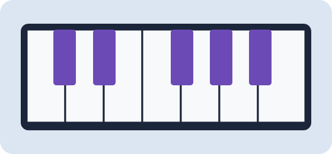

Find Your Next Chord Progression
Discover inspiring piano chord progressions by key and mood. Find new ideas for practice, songwriting, and creativity.
Generate a ProgressionPopular Progressions
Start with three favorites, then explore the full progression library.
Loading popular progressions...
How It Works
- Choose Your Key
- Choose Your Mood
- Generate & Play
Turn Ideas Into Music
A chord progression is a sequence of chords that gives a song its musical direction. Try playing each chord for four beats, or experiment with different rhythms.
Use the Generator to explore new ideas or browse the Progressions page to learn the notes in each chord.
